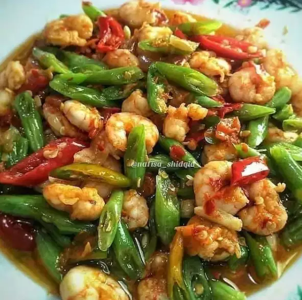

1. Tumis buncis udang

foto: Instagram/@resep_masakrumahan
Bahan :
- 100 gr udang loreng, kupas san bersihkan
- 100 gr baby buncis, iris serong
- Garam
- Gula
- Penyedap rasa
- 1 buah cabai merah besar, iris serong
- 1 buah cabai hijau besar, iris serong
Bumbu halus
- Cabai rawit
- Cabai keriting sesuai selera
- 2 siung bawah putih
- 4 butir bawang merah
Cara membuat :
- Tumis bumbu halus, beri air sedikit dan masak sampai harum.
- Tumis bumbu halus, beri air sedikit dan masak sampai harum.
- Terakhir masukkan udang, masak sampai udang berubah warna dan matang. Angkat dan sajikan.